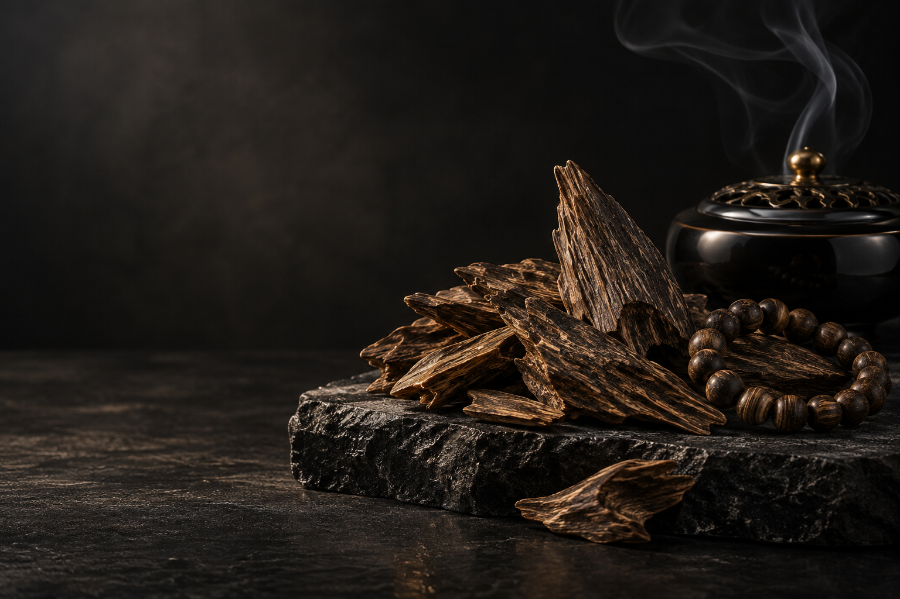

沉RESINOUS
WOOD
WOOD

低温闻香
香气更净、更长
01 / COLLECTION
本季香选
从清凉甘韵到醇厚木香，每款皆标注产区、香调与适宜方式，初识与深赏都有从容选择。
02 / RITUAL
先看油脂与木理，天然沉香的纹理不求整齐。
以 160–180°C 隔火熏闻，让香韵依次展开。
前调清扬，中段甘润，尾韵才见一木的性情。
03 / OUR STORY
我们相信，沉香的珍贵不只在稀少，更在它记录了树木与时间的相遇。沉香阁与长期合作的选香人同行，从产区、结香状态到香韵逐一筛选，并为每批香材建立品鉴档案。
查看本季香选 →04 / KNOWLEDGE
简明答案，帮助第一次接触沉香的人建立清晰判断。
沉香是沉香属等树木受到损伤或生物、非生物胁迫后，防御反应产生芳香树脂并逐渐沉积而形成的木质部分。
先看香韵和使用方式：偏爱清凉甘甜，可从惠安系香材开始；喜欢醇厚木质调，可考虑加里曼丹香珠；想要日常使用，则可选择线香。
从少量香材开始，用可控温香炉缓慢加热，先观木理，再依次感受前调、中段与尾韵；避免直接大火燃烧。
置于阴凉、干燥、无强烈异味处，避免暴晒、潮湿，也不要与香水等气味浓烈的物品混放。